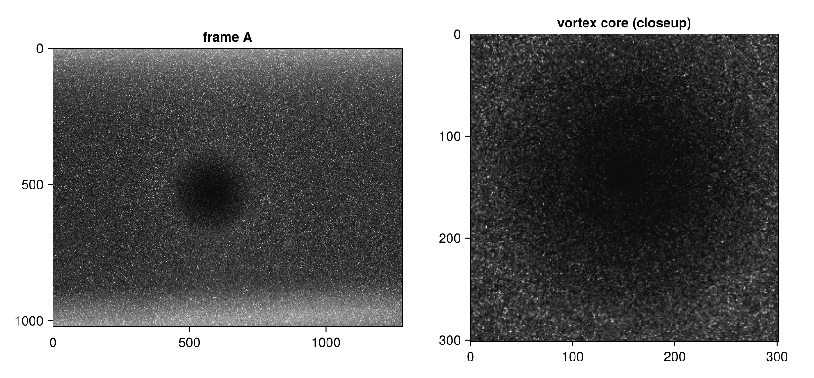
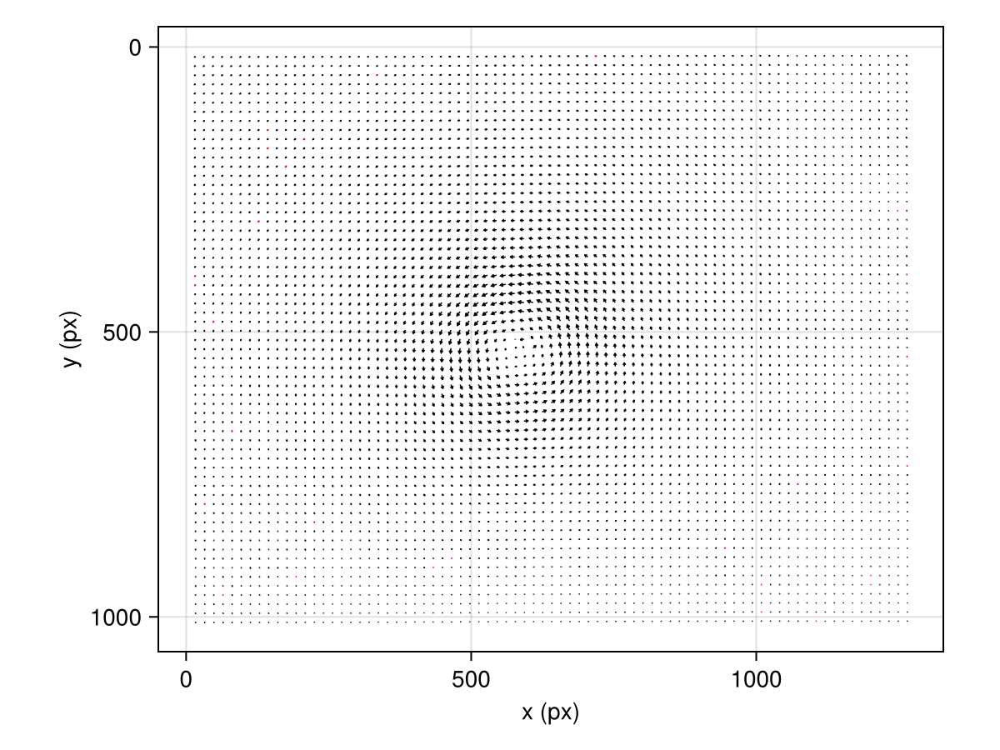
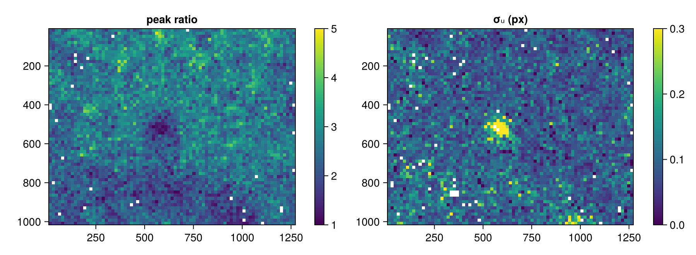

A real recording: tip vortex with seeding dropout
The first tutorial generated its own images, so every claim could be checked against ground truth. Real measurements offer no such luxury — and that changes how you work. This tutorial analyzes a genuine wind-tunnel recording and shows how to judge a measurement using only what the analysis itself reports: validation flags, peak ratios, and per-vector uncertainty.
The data is case A of the first International PIV Challenge (Stanislas et al., 2003): a wing-tip vortex 1.64 m behind a transport aircraft half-model in the DNW-LLF wind tunnel, recorded by C. Kähler (DLR). The Challenge organizers chose it because it concentrates common large-facility problems in one image pair — strong velocity gradients, varying particle image sizes, and loss of seeding in the vortex core. The pair ships with Hammerhead's test suite, so this tutorial runs on the real recording with no download step.
Load and inspect
load_image reads any FileIO-supported image (here 12-bit grayscale TIFF) into a Matrix{Float64} scaled to $[0, 1]$:
using Hammerhead
dir = joinpath(pkgdir(Hammerhead), "test", "reference_images", "A")
imgA = load_image(joinpath(dir, "A001_1.tif"))
imgB = load_image(joinpath(dir, "A001_2.tif"))
size(imgA), extrema(imgA)((1024, 1280), (0.0, 1.0))Always look at real images before correlating them:
using CairoMakie
let
fig = Figure(size = (860, 400))
ax1 = Axis(fig[1, 1]; title = "frame A", yreversed = true, aspect = DataAspect())
image!(ax1, imgA'; colormap = :grays)
ax2 = Axis(fig[1, 2]; title = "vortex core (closeup)", yreversed = true,
aspect = DataAspect())
image!(ax2, imgA[395:695, 425:725]'; colormap = :grays)
fig
end
Three things stand out. The seeding is dense and the particle images are large and bright — good news for correlation. The illumination is far from uniform: the light sheet is much brighter near the top and bottom edges (the row-wise mean intensity varies by a factor of four across the frame). And near the center sits a dark disk roughly 200 px across: the vortex core, nearly empty of particles because the swirl centrifuges the seeding out of it. No preprocessing can restore information that was never recorded there — keep that disk in mind throughout.
Run the analysis
In-plane displacements in this pair reach about 10 px, so the first pass needs 64 px windows (the quarter-window rule); later passes refine at 32 px. Repeating the final window size adds the convergence sweep that the uncertainty estimator requires. This is the same accuracy configuration as in the first tutorial:
passes = multipass_parameters([64, 32, 32];
padding = true,
apodization = :gauss,
uncertainty = true,
)
result = run_piv(imgA, imgB, passes)PIVResult{Float64}(79×63 grid, 28 outliers)plot_vector_field(result)
A clean tip vortex, its center sitting exactly on the dark disk. The free-stream flow is perpendicular to the light sheet, so the in-plane field is almost pure swirl.
Judging a measurement without ground truth
With synthetic data we verified accuracy by subtraction. Here the only evidence is what the correlation itself reports, and Hammerhead records three layers of it in the PIVResult:
result.outliers— binary validation verdicts (universal outlier detection plus peak-ratio checks by default).result.peak_ratio— the height ratio of the primary to the secondary correlation peak, the classic detectability metric.result.uncertainty_u/uncertainty_v— the Wieneke (2015) per-vector random-error estimate (Wieneke, 2015).
Start with the flags:
count(result.outliers), length(result.outliers)(28, 4977)Under one percent of nearly 5000 vectors — scattered single vectors, mostly near the frame edges, and (perhaps surprisingly) not clustered in the empty core. Validation is a binary verdict on catastrophic failure; a window that still contains a handful of particles produces a plausible, neighbor-consistent vector and passes. To see the quality of what passed, look at the continuous metrics:
valid = .!(result.outliers .| result.mask);
let
fig = Figure(size = (900, 330))
pr = copy(result.peak_ratio)
pr[.!valid] .= NaN
ax1 = Axis(fig[1, 1]; title = "peak ratio", yreversed = true, aspect = DataAspect())
hm1 = heatmap!(ax1, result.x, result.y, pr'; colorrange = (1, 5))
Colorbar(fig[1, 2], hm1)
σu = copy(result.uncertainty_u)
σu[.!valid] .= NaN
ax2 = Axis(fig[1, 3]; title = "σᵤ (px)", yreversed = true, aspect = DataAspect())
hm2 = heatmap!(ax2, result.x, result.y, σu'; colorrange = (0, 0.3))
Colorbar(fig[1, 4], hm2)
fig
end
Both maps point at the core without being told where it is: the peak ratio dips and the estimated uncertainty flares exactly on the dark disk. Quantitatively (medians, because near-outlier windows can legitimately report enormous σ):
using Statistics: median, quantile
r_core = [hypot(x - 577, y - 545) for y in result.y, x in result.x] # px from disk center
function region_quality(sel)
pr = filter(isfinite, result.peak_ratio[sel .& valid])
σu = filter(isfinite, result.uncertainty_u[sel .& valid])
(median_pr = round(median(pr); digits = 2),
median_σu = round(median(σu); digits = 3),
q90_σu = round(quantile(σu, 0.9); digits = 3))
end
(core = region_quality(r_core .< 120), far_field = region_quality(r_core .> 300))(core = (median_pr = 2.09, median_σu = 0.131, q90_σu = 0.318), far_field = (median_pr = 2.46, median_σu = 0.088, q90_σu = 0.148))In the far field the estimator reports a typical random error near 0.09 px. Inside the core the median rises by half and the upper decile roughly doubles — the sparse windows correlate on fewer, weaker particle images, and the uncertainty says so honestly, vector by vector. This is the division of labor on real data: validation removes the wreckage, uncertainty grades everything that survives. See Uncertainty quantification for what the estimate does and doesn't cover.
Preprocessing: measure, don't assume
The preprocessing guide ends with a rule: check a chain's effect before committing to it, using the peak-ratio distribution as the judge. This recording suggests three candidates — highpass_filter for the illumination gradient, intensity_cap for the bright particles (Shavit et al., 2007), and clahe for the dim core. Run the same analysis behind each and compare:
candidates = [
"raw" => identity,
"highpass (σ = 8)" => img -> highpass_filter(img; sigma = 8),
"intensity cap" => img -> intensity_cap(img),
"CLAHE" => img -> clahe(img),
]
function chain_quality(f)
res = run_piv(f(imgA), f(imgB), passes)
ok = .!(res.outliers .| res.mask)
pr = filter(isfinite, res.peak_ratio[ok])
(median_pr = round(median(pr); digits = 2),
q10_pr = round(quantile(pr, 0.1); digits = 2),
outliers = count(res.outliers))
end
[name => chain_quality(f) for (name, f) in candidates]4-element Vector{Pair{String, @NamedTuple{median_pr::Float64, q10_pr::Float64, outliers::Int64}}}:
"raw" => (median_pr = 2.47, q10_pr = 1.8, outliers = 28)
"highpass (σ = 8)" => (median_pr = 2.08, q10_pr = 1.42, outliers = 70)
"intensity cap" => (median_pr = 2.49, q10_pr = 1.79, outliers = 50)
"CLAHE" => (median_pr = 2.53, q10_pr = 1.86, outliers = 31)The result upends the assumptions. The high-pass filter — the textbook response to illumination gradients — lowers the median peak ratio and triples the outlier count: these particle images are large, so a filter tuned to remove smooth background removes particle energy too, and the smooth gradient never bothered the correlator in the first place (each window subtracts its own mean). Intensity capping doubles the outliers for the same reason: the brightest particles are signal here, not noise. Only CLAHE helps, and modestly — it flattens the visible banding and nudges peak ratios up in the dim regions.
The lesson is not that preprocessing is useless — on recordings with static glare or genuinely low contrast it is decisive. The lesson is that every step must pay for itself in measured correlation quality on your images. Here the honest conclusion is that the recording is already good, and the elevated uncertainty in the core is a property of the flow (the particles really are missing), not a defect any filter can repair. With more than one image pair, ensemble correlation can pool the few particles that do transit the core across many instants — see Ensemble correlation for low SNR.
Where to go next
- Static background removal needs a frame sequence (
compute_background): the preprocessing guide. - If the default checks flag too much or too little: Tune validation.
- Whole recordings, incremental result files: Batch processing.
- What σᵤ means and when to trust it: Uncertainty quantification.
- Two cameras: the stereo tutorial.
This page was generated using Literate.jl.